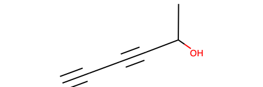
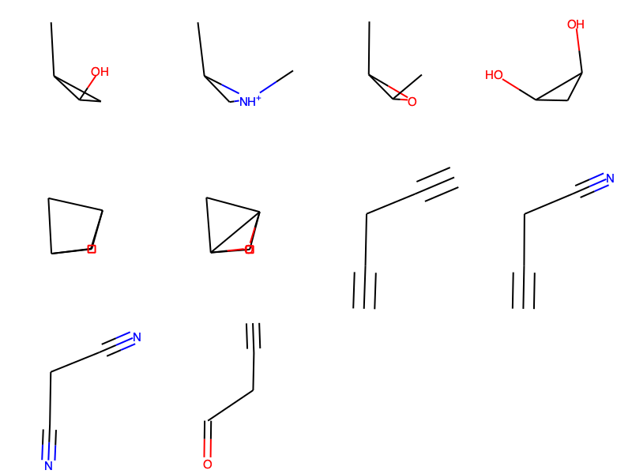
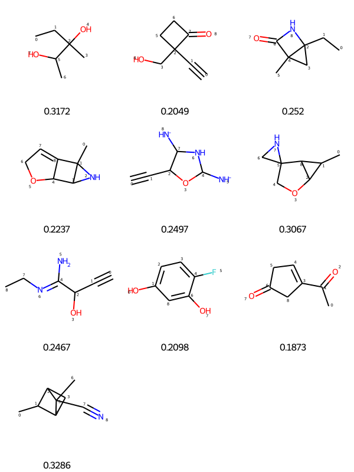
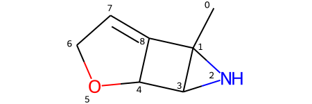
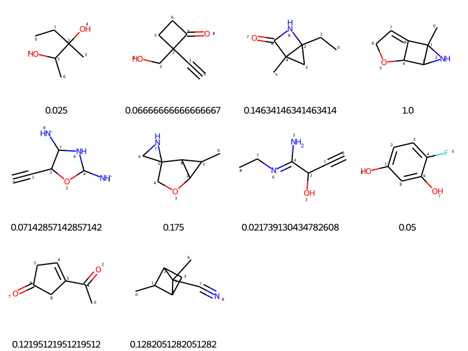
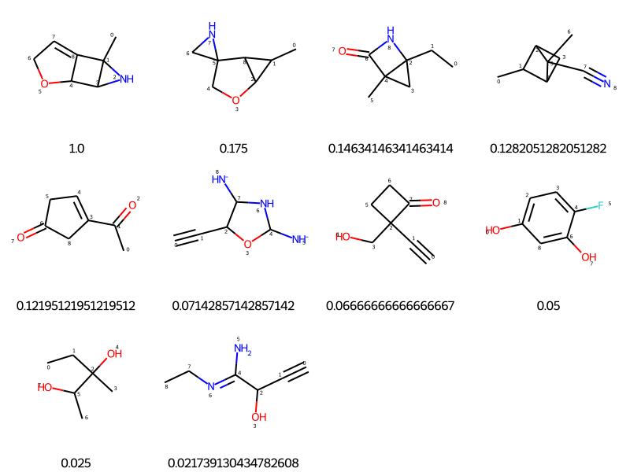

from torch_geometric.datasets import QM9Dataset
In this notebook I will be exclusively looking at the QM9 dataset.
QM9 dataset
QM9 provides quantum chemical properties for a relevant, consistent, and comprehensive chemical space of small organic molecules. This dataset consists of 130,831 molecules with 12 regression targets.
There are different ways of getting this dataset.
- Get it directly from source using
wgetin Linux / MacOS:
#!/bin/bash
wget http://deepchem.io.s3-website-us-west-1.amazonaws.com/datasets/gdb9.tar.gz
tar xvzf gdb9.tar.gzIf you dont have wget, follow this blog to install wget on macOS using Homebrew:
# Using Homebrew
brew install wget- Using convenience functions implemented in packages like
DeepChemorPyTorch Geometric.
Below is the method to get QM9 data from PyTorch Geometric. More information on the script to start using the dataset can be found on the official documentation
To setup PyTorch Geometric:
#create a new conda env with python 3.7
conda create --name torch_rdkit python=3.7
# To active the env: conda activate torch_rdkit
# RDKIT installation:
conda install cmake cairo pillow eigen pkg-config
conda install boost-cpp boost py-boost
conda install rdkit
# install latest Pytorch version for MacOS:
pip3 install torch torchvision torchaudio
#install Torch Geometric:
pip install torch-scatter -f https://pytorch-geometric.com/whl/torch-1.8.0+cpu.html
pip install torch-sparse -f https://pytorch-geometric.com/whl/torch-1.8.0+cpu.html
pip install torch-cluster -f https://pytorch-geometric.com/whl/torch-1.8.0+cpu.html
pip install torch-spline-conv -f https://pytorch-geometric.com/whl/torch-1.8.0+cpu.html
pip install torch-geometric
# Check PyTorch Geometric installation:
python -c "import torch_geometric; print(torch.__version__)" To get the dataset:
from torch_geometric.datasets import QM9
dataset = QM9(root='<set_dir_path>')QM9torch_geometric.datasets.qm9.QM9root_dir = '/Users/pghaneka/Documents/Personal/blog_fastpages/_notebooks/data/QM9_dataset'
dataset = QM9(root=root_dir)datasetQM9(130831)type(dataset)torch_geometric.datasets.qm9.QM9dataset?Type: QM9 String form: QM9(130831) Length: 130831 File: ~/miniconda3/envs/torch_38/lib/python3.7/site-packages/torch_geometric/datasets/qm9.py Docstring: The QM9 dataset from the `"MoleculeNet: A Benchmark for Molecular Machine Learning" <https://arxiv.org/abs/1703.00564>`_ paper, consisting of about 130,000 molecules with 19 regression targets. Each molecule includes complete spatial information for the single low energy conformation of the atoms in the molecule. In addition, we provide the atom features from the `"Neural Message Passing for Quantum Chemistry" <https://arxiv.org/abs/1704.01212>`_ paper. +--------+----------------------------------+-----------------------------------------------------------------------------------+---------------------------------------------+ | Target | Property | Description | Unit | +========+==================================+===================================================================================+=============================================+ | 0 | :math:`\mu` | Dipole moment | :math:`\textrm{D}` | +--------+----------------------------------+-----------------------------------------------------------------------------------+---------------------------------------------+ | 1 | :math:`\alpha` | Isotropic polarizability | :math:`{a_0}^3` | +--------+----------------------------------+-----------------------------------------------------------------------------------+---------------------------------------------+ | 2 | :math:`\epsilon_{\textrm{HOMO}}` | Highest occupied molecular orbital energy | :math:`\textrm{eV}` | +--------+----------------------------------+-----------------------------------------------------------------------------------+---------------------------------------------+ | 3 | :math:`\epsilon_{\textrm{LUMO}}` | Lowest unoccupied molecular orbital energy | :math:`\textrm{eV}` | +--------+----------------------------------+-----------------------------------------------------------------------------------+---------------------------------------------+ | 4 | :math:`\Delta \epsilon` | Gap between :math:`\epsilon_{\textrm{HOMO}}` and :math:`\epsilon_{\textrm{LUMO}}` | :math:`\textrm{eV}` | +--------+----------------------------------+-----------------------------------------------------------------------------------+---------------------------------------------+ | 5 | :math:`\langle R^2 \rangle` | Electronic spatial extent | :math:`{a_0}^2` | +--------+----------------------------------+-----------------------------------------------------------------------------------+---------------------------------------------+ | 6 | :math:`\textrm{ZPVE}` | Zero point vibrational energy | :math:`\textrm{eV}` | +--------+----------------------------------+-----------------------------------------------------------------------------------+---------------------------------------------+ | 7 | :math:`U_0` | Internal energy at 0K | :math:`\textrm{eV}` | +--------+----------------------------------+-----------------------------------------------------------------------------------+---------------------------------------------+ | 8 | :math:`U` | Internal energy at 298.15K | :math:`\textrm{eV}` | +--------+----------------------------------+-----------------------------------------------------------------------------------+---------------------------------------------+ | 9 | :math:`H` | Enthalpy at 298.15K | :math:`\textrm{eV}` | +--------+----------------------------------+-----------------------------------------------------------------------------------+---------------------------------------------+ | 10 | :math:`G` | Free energy at 298.15K | :math:`\textrm{eV}` | +--------+----------------------------------+-----------------------------------------------------------------------------------+---------------------------------------------+ | 11 | :math:`c_{\textrm{v}}` | Heat capavity at 298.15K | :math:`\frac{\textrm{cal}}{\textrm{mol K}}` | +--------+----------------------------------+-----------------------------------------------------------------------------------+---------------------------------------------+ | 12 | :math:`U_0^{\textrm{ATOM}}` | Atomization energy at 0K | :math:`\textrm{eV}` | +--------+----------------------------------+-----------------------------------------------------------------------------------+---------------------------------------------+ | 13 | :math:`U^{\textrm{ATOM}}` | Atomization energy at 298.15K | :math:`\textrm{eV}` | +--------+----------------------------------+-----------------------------------------------------------------------------------+---------------------------------------------+ | 14 | :math:`H^{\textrm{ATOM}}` | Atomization enthalpy at 298.15K | :math:`\textrm{eV}` | +--------+----------------------------------+-----------------------------------------------------------------------------------+---------------------------------------------+ | 15 | :math:`G^{\textrm{ATOM}}` | Atomization free energy at 298.15K | :math:`\textrm{eV}` | +--------+----------------------------------+-----------------------------------------------------------------------------------+---------------------------------------------+ | 16 | :math:`A` | Rotational constant | :math:`\textrm{GHz}` | +--------+----------------------------------+-----------------------------------------------------------------------------------+---------------------------------------------+ | 17 | :math:`B` | Rotational constant | :math:`\textrm{GHz}` | +--------+----------------------------------+-----------------------------------------------------------------------------------+---------------------------------------------+ | 18 | :math:`C` | Rotational constant | :math:`\textrm{GHz}` | +--------+----------------------------------+-----------------------------------------------------------------------------------+---------------------------------------------+ Args: root (string): Root directory where the dataset should be saved. transform (callable, optional): A function/transform that takes in an :obj:`torch_geometric.data.Data` object and returns a transformed version. The data object will be transformed before every access. (default: :obj:`None`) pre_transform (callable, optional): A function/transform that takes in an :obj:`torch_geometric.data.Data` object and returns a transformed version. The data object will be transformed before being saved to disk. (default: :obj:`None`) pre_filter (callable, optional): A function that takes in an :obj:`torch_geometric.data.Data` object and returns a boolean value, indicating whether the data object should be included in the final dataset. (default: :obj:`None`)
Look at the mean of target 2 which is the \(\epsilon_{\textrm{HOMO}}\):
dataset.mean(2)-6.536452770233154Convenience function to get the graph object for a molecule
molecule_graph_entry = dataset.get(1234) #Get graph object for molecule id 1234
molecule_graph_entryData(edge_attr=[32, 4], edge_index=[2, 32], idx=[1], name="gdb_1269", pos=[17, 3], x=[17, 11], y=[1, 19], z=[17])molecule_graph_entry.keys['x', 'edge_index', 'edge_attr', 'y', 'pos', 'z', 'name', 'idx']molecule_graph_entry.y.numpy()[:,2] # 2nd target property value for 1234 entry array([-6.7674713], dtype=float32)molecule_graph_entry.name'gdb_1269'# Look at raw files for the QM9 dataset. This can be used with Pandas.
dataset.raw_file_names['gdb9.sdf', 'gdb9.sdf.csv', 'uncharacterized.txt']# Check the path where it will be saved
dataset.processed_paths['/Users/pghaneka/Documents/Personal/blog_fastpages/_notebooks/data/QM9_dataset/processed/data_v2.pt']Using Pandas + RDkit
Henceforth we will switch to Pandas and RDkit. I will be using the gdb9.sdf, gdb9.sdf.csv files for processing and checking the RDkit molecules
import os
import pandas as pd
import numpy as np
import tqdm.notebook as tqdm# RDkit imports
import rdkit
from rdkit import Chem
from rdkit.Chem import Draw
from rdkit.Chem.Draw import IPythonConsole #Needed to show molecules
print(rdkit.__version__)
Chem.WrapLogs()
lg = rdkit.RDLogger.logger()
lg.setLevel(rdkit.RDLogger.CRITICAL)2019.03.2qm9_data_csv = pd.read_csv(os.path.join(root_dir,'raw/gdb9.sdf.csv'))qm9_data_csv.head(3)| mol_id | A | B | C | mu | alpha | homo | lumo | gap | r2 | zpve | u0 | u298 | h298 | g298 | cv | u0_atom | u298_atom | h298_atom | g298_atom | |
|---|---|---|---|---|---|---|---|---|---|---|---|---|---|---|---|---|---|---|---|---|
| 0 | gdb_1 | 157.71180 | 157.70997 | 157.70699 | 0.0000 | 13.21 | -0.3877 | 0.1171 | 0.5048 | 35.3641 | 0.044749 | -40.478930 | -40.476062 | -40.475117 | -40.498597 | 6.469 | -395.999595 | -398.643290 | -401.014647 | -372.471772 |
| 1 | gdb_2 | 293.60975 | 293.54111 | 191.39397 | 1.6256 | 9.46 | -0.2570 | 0.0829 | 0.3399 | 26.1563 | 0.034358 | -56.525887 | -56.523026 | -56.522082 | -56.544961 | 6.316 | -276.861363 | -278.620271 | -280.399259 | -259.338802 |
| 2 | gdb_3 | 799.58812 | 437.90386 | 282.94545 | 1.8511 | 6.31 | -0.2928 | 0.0687 | 0.3615 | 19.0002 | 0.021375 | -76.404702 | -76.401867 | -76.400922 | -76.422349 | 6.002 | -213.087624 | -213.974294 | -215.159658 | -201.407171 |
qm9_data_csv.shape(133885, 20)Use the docstring above the refer column names.
To get molecules in RDkit from SD file: More on reading and molecules can be found on the RDkit blog
QM9_SDF_path = os.path.join(root_dir,'raw/gdb9.sdf')# Get Rdkit molecules from SDFile:
suppl = Chem.SDMolSupplier(QM9_SDF_path)temp_mol = next(suppl)
temp_mol
type(temp_mol)rdkit.Chem.rdchem.MolWe can generate a list of molecules. This will take time and is not recommended if the dataset is larger than what we are using right now
mols = [x for x in suppl]
print ('No. of mols',len(mols))No. of mols 133885mols[:5][<rdkit.Chem.rdchem.Mol at 0x7fdf8e01ce90>,
<rdkit.Chem.rdchem.Mol at 0x7fdf8e01cee0>,
<rdkit.Chem.rdchem.Mol at 0x7fdf8e01cf30>,
<rdkit.Chem.rdchem.Mol at 0x7fdf8e01cf80>,
<rdkit.Chem.rdchem.Mol at 0x7fdf8e01e030>]mols[1234]
mols[1234].GetNumAtoms()7Convert the RDkit Mol data to Canonical SMILE
Chem.MolToSmiles(mols[1234], canonical=True)'C#CC#CC(C)O'mol_block = Chem.MolToMolBlock(mols[1234])
print(mol_block)gdb_1235
RDKit 3D
7 6 0 0 1 0 0 0 0 0999 V2000
0.0513 1.5589 -0.0209 C 0 0 0 0 0 0 0 0 0 0 0 0
0.0393 0.0228 -0.0260 C 0 0 0 0 0 0 0 0 0 0 0 0
0.8127 -0.5176 1.0408 O 0 0 0 0 0 0 0 0 0 0 0 0
-1.3293 -0.5021 -0.0211 C 0 0 0 0 0 0 0 0 0 0 0 0
-2.4634 -0.9241 0.0197 C 0 0 0 0 0 0 0 0 0 0 0 0
-3.7381 -1.3982 0.0628 C 0 0 0 0 0 0 0 0 0 0 0 0
-4.8694 -1.8185 0.1023 C 0 0 0 0 0 0 0 0 0 0 0 0
2 4 1 0
1 2 1 0
2 3 1 0
4 5 3 0
5 6 1 0
6 7 3 0
M END
Visualize multiple molecules together
Chem.Draw.MolsToGridImage(mols[100:110], molsPerRow=4, subImgSize=(200,200))
type(mols[316])NoneTypeSMILE_dict = {'id':[], 'SMILES':[]}
error_id = []
for i, entry in enumerate(tqdm.tqdm(mols)):
if entry != None:
smile_string = Chem.MolToSmiles(entry)
SMILE_dict['id'].append('gdb_{}'.format(int(i+1)))
SMILE_dict['SMILES'].append(smile_string)
else:
error_id.append(i)len(error_id) / len(mols) * 1000.47652836389438696SMILE_dict.keys()dict_keys(['id', 'SMILES'])SMILES_df = pd.DataFrame(SMILE_dict, columns=['id','SMILES'])SMILES_df| id | SMILES | |
|---|---|---|
| 0 | gdb_1 | C |
| 1 | gdb_2 | N |
| 2 | gdb_3 | O |
| 3 | gdb_4 | C#C |
| 4 | gdb_5 | C#N |
| ... | ... | ... |
| 133242 | gdb_133879 | C1C2C3C2[NH+]2C4CC12C34 |
| 133243 | gdb_133880 | C1C2C3C4C5OC13C2C54 |
| 133244 | gdb_133883 | C1[NH+]2C3C2C2[NH+]4CC12C34 |
| 133245 | gdb_133884 | C1C2C3C2C2[NH+]4CC12C34 |
| 133246 | gdb_133885 | C1[NH+]2C3C4C5OC13C2C54 |
133247 rows × 2 columns
qm9_with_smiles = qm9_data_csv.merge(SMILES_df, left_on='mol_id', right_on='id')print(qm9_with_smiles.shape, qm9_data_csv.shape, SMILES_df.shape)(133247, 22) (133885, 20) (133247, 2)qm9_with_smiles| mol_id | A | B | C | mu | alpha | homo | lumo | gap | r2 | ... | u298 | h298 | g298 | cv | u0_atom | u298_atom | h298_atom | g298_atom | id | SMILES | |
|---|---|---|---|---|---|---|---|---|---|---|---|---|---|---|---|---|---|---|---|---|---|
| 0 | gdb_1 | 157.71180 | 157.709970 | 157.706990 | 0.0000 | 13.21 | -0.3877 | 0.1171 | 0.5048 | 35.3641 | ... | -40.476062 | -40.475117 | -40.498597 | 6.469 | -395.999595 | -398.643290 | -401.014647 | -372.471772 | gdb_1 | C |
| 1 | gdb_2 | 293.60975 | 293.541110 | 191.393970 | 1.6256 | 9.46 | -0.2570 | 0.0829 | 0.3399 | 26.1563 | ... | -56.523026 | -56.522082 | -56.544961 | 6.316 | -276.861363 | -278.620271 | -280.399259 | -259.338802 | gdb_2 | N |
| 2 | gdb_3 | 799.58812 | 437.903860 | 282.945450 | 1.8511 | 6.31 | -0.2928 | 0.0687 | 0.3615 | 19.0002 | ... | -76.401867 | -76.400922 | -76.422349 | 6.002 | -213.087624 | -213.974294 | -215.159658 | -201.407171 | gdb_3 | O |
| 3 | gdb_4 | 0.00000 | 35.610036 | 35.610036 | 0.0000 | 16.28 | -0.2845 | 0.0506 | 0.3351 | 59.5248 | ... | -77.305527 | -77.304583 | -77.327429 | 8.574 | -385.501997 | -387.237686 | -389.016047 | -365.800724 | gdb_4 | C#C |
| 4 | gdb_5 | 0.00000 | 44.593883 | 44.593883 | 2.8937 | 12.99 | -0.3604 | 0.0191 | 0.3796 | 48.7476 | ... | -93.409370 | -93.408425 | -93.431246 | 6.278 | -301.820534 | -302.906752 | -304.091489 | -288.720028 | gdb_5 | C#N |
| ... | ... | ... | ... | ... | ... | ... | ... | ... | ... | ... | ... | ... | ... | ... | ... | ... | ... | ... | ... | ... | ... |
| 133242 | gdb_133879 | 3.52243 | 2.185850 | 1.902520 | 1.4529 | 77.63 | -0.2229 | 0.0977 | 0.3206 | 796.9713 | ... | -364.728220 | -364.727276 | -364.762857 | 24.820 | -1802.904893 | -1815.522844 | -1825.598756 | -1678.637403 | gdb_133879 | C1C2C3C2[NH+]2C4CC12C34 |
| 133243 | gdb_133880 | 3.56068 | 2.195510 | 1.920670 | 1.3774 | 73.24 | -0.2427 | 0.0904 | 0.3331 | 777.3913 | ... | -384.604306 | -384.603362 | -384.638652 | 23.968 | -1737.300710 | -1749.148080 | -1758.630996 | -1619.706151 | gdb_133880 | C1C2C3C4C5OC13C2C54 |
| 133244 | gdb_133883 | 3.67118 | 2.143140 | 1.895010 | 1.2480 | 73.60 | -0.2233 | 0.0720 | 0.2953 | 780.3553 | ... | -380.748619 | -380.747675 | -380.783148 | 23.972 | -1667.045429 | -1678.830048 | -1688.312964 | -1549.143391 | gdb_133883 | C1[NH+]2C3C2C2[NH+]4CC12C34 |
| 133245 | gdb_133884 | 3.52845 | 2.151310 | 1.865820 | 1.9576 | 77.40 | -0.2122 | 0.0881 | 0.3003 | 803.1904 | ... | -364.714974 | -364.714030 | -364.749650 | 24.796 | -1794.600439 | -1807.210860 | -1817.286772 | -1670.349892 | gdb_133884 | C1C2C3C2C2[NH+]4CC12C34 |
| 133246 | gdb_133885 | 3.64015 | 2.217640 | 1.937930 | 0.8626 | 69.48 | -0.2316 | 0.0742 | 0.3058 | 756.3557 | ... | -400.627892 | -400.626948 | -400.662186 | 23.434 | -1603.471865 | -1614.455155 | -1623.345075 | -1492.247150 | gdb_133885 | C1[NH+]2C3C4C5OC13C2C54 |
133247 rows × 22 columns
qm9_with_smiles.to_csv('./QM9_cleaned_SMILES_data.csv', sep=',',columns=qm9_with_smiles.columns, index=False)Little more on the dataset
The QM9 dataset from the MoleculeNet: A Benchmark for Molecular Machine Learning paper, consisting of about 130,000 molecules with 19 regression targets.
Each molecule includes complete spatial information for the single low energy conformation of the atoms in the molecule.
More information on each descriptor here
QM9_df = pd.read_csv('./QM9_dataset/QM9_cleaned_SMILES_data.csv', sep=',').drop(columns=['id'])QM9_df.head(5)| mol_id | A | B | C | mu | alpha | homo | lumo | gap | r2 | ... | u0 | u298 | h298 | g298 | cv | u0_atom | u298_atom | h298_atom | g298_atom | SMILES | |
|---|---|---|---|---|---|---|---|---|---|---|---|---|---|---|---|---|---|---|---|---|---|
| 0 | gdb_1 | 157.71180 | 157.709970 | 157.706990 | 0.0000 | 13.21 | -0.3877 | 0.1171 | 0.5048 | 35.3641 | ... | -40.478930 | -40.476062 | -40.475117 | -40.498597 | 6.469 | -395.999595 | -398.643290 | -401.014647 | -372.471772 | C |
| 1 | gdb_2 | 293.60975 | 293.541110 | 191.393970 | 1.6256 | 9.46 | -0.2570 | 0.0829 | 0.3399 | 26.1563 | ... | -56.525887 | -56.523026 | -56.522082 | -56.544961 | 6.316 | -276.861363 | -278.620271 | -280.399259 | -259.338802 | N |
| 2 | gdb_3 | 799.58812 | 437.903860 | 282.945450 | 1.8511 | 6.31 | -0.2928 | 0.0687 | 0.3615 | 19.0002 | ... | -76.404702 | -76.401867 | -76.400922 | -76.422349 | 6.002 | -213.087624 | -213.974294 | -215.159658 | -201.407171 | O |
| 3 | gdb_4 | 0.00000 | 35.610036 | 35.610036 | 0.0000 | 16.28 | -0.2845 | 0.0506 | 0.3351 | 59.5248 | ... | -77.308427 | -77.305527 | -77.304583 | -77.327429 | 8.574 | -385.501997 | -387.237686 | -389.016047 | -365.800724 | C#C |
| 4 | gdb_5 | 0.00000 | 44.593883 | 44.593883 | 2.8937 | 12.99 | -0.3604 | 0.0191 | 0.3796 | 48.7476 | ... | -93.411888 | -93.409370 | -93.408425 | -93.431246 | 6.278 | -301.820534 | -302.906752 | -304.091489 | -288.720028 | C#N |
5 rows × 21 columns
QM9_df.shape(133247, 21)Visualize the SMILE string
mol_temp = QM9_df.iloc[125559]mol_tempmol_id gdb_126190
A 1.86888
B 1.78713
C 0.99314
mu 2.5328
alpha 86.42
homo -0.2178
lumo 0.0285
gap 0.2463
r2 1261.0619
zpve 0.18249
u0 -383.308785
u298 -383.298647
h298 -383.297702
g298 -383.344953
cv 35.514
u0_atom -2014.544226
u298_atom -2026.84654
h298_atom -2038.700812
g298_atom -1874.253921
SMILES CCc1c(C)cnn1C
Name: 125559, dtype: objectmol_obj = Chem.MolFromSmiles(mol_temp['SMILES'])
mol_obj# To output x y z of the molecule
print(Chem.MolToMolBlock(mol_obj))
RDKit 2D
9 9 0 0 0 0 0 0 0 0999 V2000
3.5260 -1.2990 0.0000 C 0 0 0 0 0 0 0 0 0 0 0 0
2.7760 0.0000 0.0000 C 0 0 0 0 0 0 0 0 0 0 0 0
1.2760 0.0000 0.0000 C 0 0 0 0 0 0 0 0 0 0 0 0
0.3943 1.2135 0.0000 C 0 0 0 0 0 0 0 0 0 0 0 0
0.8578 2.6401 0.0000 C 0 0 0 0 0 0 0 0 0 0 0 0
-1.0323 0.7500 0.0000 C 0 0 0 0 0 0 0 0 0 0 0 0
-1.0323 -0.7500 0.0000 N 0 0 0 0 0 0 0 0 0 0 0 0
0.3943 -1.2135 0.0000 N 0 0 0 0 0 0 0 0 0 0 0 0
0.8578 -2.6401 0.0000 C 0 0 0 0 0 0 0 0 0 0 0 0
1 2 1 0
2 3 1 0
3 4 2 0
4 5 1 0
4 6 1 0
6 7 2 0
7 8 1 0
8 9 1 0
8 3 1 0
M END
Take a small sample from QM9 dataset
QM9_df_smol = QM9_df.sample(10).reset_index(drop=True)QM9_df_smol.head(2)| mol_id | A | B | C | mu | alpha | homo | lumo | gap | r2 | ... | u0 | u298 | h298 | g298 | cv | u0_atom | u298_atom | h298_atom | g298_atom | SMILES | |
|---|---|---|---|---|---|---|---|---|---|---|---|---|---|---|---|---|---|---|---|---|---|
| 0 | gdb_6054 | 2.99737 | 1.48687 | 1.26642 | 2.2886 | 74.10 | -0.2539 | 0.0634 | 0.3172 | 1099.7467 | ... | -387.352042 | -387.341825 | -387.340880 | -387.386054 | 38.570 | -1969.393071 | -1982.533737 | -1994.981633 | -1823.610180 | CCC(C)(O)C(C)O |
| 1 | gdb_105582 | 1.88587 | 1.65405 | 1.28010 | 3.2414 | 75.11 | -0.2440 | -0.0391 | 0.2049 | 1087.1141 | ... | -421.792588 | -421.783422 | -421.782478 | -421.826637 | 33.805 | -1715.510460 | -1724.868501 | -1734.351417 | -1600.736553 | C#CC1(CO)CCC1=O |
2 rows × 21 columns
QM9_df_smol.shape(10, 21)PandasTools module helps add mol molecule objects from RDKit as per the SMILES in the dataframe
PandasTools.AddMoleculeColumnToFrame(QM9_df_smol, smilesCol='SMILES')Check the new ROMol columns being appended in the dataframe
QM9_df_smol.columnsIndex(['mol_id', 'A', 'B', 'C', 'mu', 'alpha', 'homo', 'lumo', 'gap', 'r2',
'zpve', 'u0', 'u298', 'h298', 'g298', 'cv', 'u0_atom', 'u298_atom',
'h298_atom', 'g298_atom', 'SMILES', 'ROMol'],
dtype='object')QM9_df_smol['ROMol'][0]Visualize the dataframe, add properties of interest at the bottom, you can add index too if need
PandasTools.FrameToGridImage(QM9_df_smol, legendsCol='gap', molsPerRow=3, subImgSize=(200,200))
Fingerprints
Compress molecules into vectors for mathetical operations and comparisons. First we will look at MorganFingerprint method. For this method we have to define the radius and the size of the vector being used. More information on Morgan Fingerprints can be read at this blogpost
# Fingerprints
from rdkit.Chem import AllChemradius = 3
nBits = 1024
ECFP6 = [AllChem.GetMorganFingerprint(m, radius) for m in QM9_df_smol['ROMol']]len(ECFP6)10Similarity
RDKit provides tools for different kinds of similarity search, including Tanimoto, Dice, Cosine, Sokal, Russel… and more. Tanimoto is a very widely use similarity search metric because it incorporates substructure matching. Here is an example
ref_mol = QM9_df_smol.iloc[3]['ROMol']ref_mol
# Generate finger print based representation for that molecule
ref_ECFP4_fps = AllChem.GetMorganFingerprintAsBitVect(ref_mol, radius=2)QM9_smol_ECFP4_fps = [AllChem.GetMorganFingerprintAsBitVect(x,2) for x in QM9_df_smol['ROMol']]from rdkit import DataStructs
similarity_efcp4 = [DataStructs.FingerprintSimilarity(ref_ECFP4_fps, x) for x in QM9_smol_ECFP4_fps]QM9_df_smol['Tanimoto_Similarity (ECFP4)'] = similarity_efcp4
PandasTools.FrameToGridImage(QM9_df_smol, legendsCol="Tanimoto_Similarity (ECFP4)", molsPerRow=4)
QM9_df_smol = QM9_df_smol.sort_values(['Tanimoto_Similarity (ECFP4)'], ascending=False)
PandasTools.FrameToGridImage(QM9_df_smol, legendsCol="Tanimoto_Similarity (ECFP4)", molsPerRow=4)